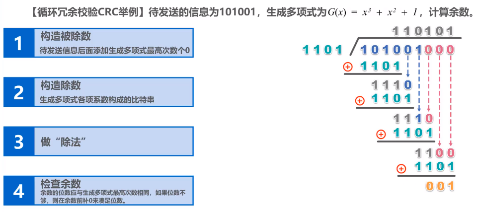

第三章 数据链路层
数据链路层：在物理层提供服务的基础上向网络层提供服务，其最基本的服务是将源自网络层的数据可靠地传输到相邻节点的目标机网络层。其主要作用是加强物理层传输原始比特流的功能，将物理层提供的可能出错的连接改造成逻辑上无差错的数据链路，使对网络层表现为无差错的链路。
链路：从一个结点到相邻节点的一段物理线路（有线或无线），而中间码元其他的交换结点。
数据链路：当需要在一条线路上传送数据时，除了必须有一条物理线路外，还必须有一些必要的通信协议控制这些数据。把这些协议的硬件和软件加到链路上就构成了数据链路。
数据链路层的功能
- 为网络层提供服务：包括无确认无连接服务、有确认无连接服务、有确认面向连接服务。
- 无确认无连接服务：源机器发送数据帧时无需先建立链路连接，目的机器收到数据帧时不需要发回确认。丢失的帧数据链路层不负责重发而交给上层处理。适用于实时通信和误码率较低的通信信道，如以太网。
- 有确认无连接服务：源机器发送数据帧时无需先建立链路连接，但目的机器收到数据帧时要发回确认，源机器在规定时间内未收到确定信号就重传丢失的帧，以提高传输的可靠性。适用于误码率较高的通信信道，如无线通信。
- 有确认面向连接服务：源机器发送数据帧时要先建立链路连接，且目的机器收到数据帧时要发回确认，源机器收到确认后才能发送下一帧，因此该服务可靠性最高，适用于通信要求较高的场合。帧传输分为建立数据链路、传输帧、释放数据链路三个步骤。
- 链路管理：即连接的建立、维持、释放。
- 流量控制：控制发送方的速度。
- 差错控制：控制帧错、位错。
封装成帧
封装成帧：就是在一段数据的前后分别添加首部和尾部，这样就构成了一个帧。在网络中数据以帧为最小单位进行传输。
帧定界：即确定帧的界限。首部和尾部中包括许多必要的控制信息，其一个重要作用就是用来帧定界。
帧同步：指接收方应能从接收到的二进制比特流中区分出帧的起始与终止。
最大传送单元MTU：链路层协议规定的所能传送的帧的数据部分长度上限。
透明传输：不管所传数据是何种比特组合，都应当能在链路上传送。
- 帧定界的方法/保证透明传输的方法：
- 字符计数法：在帧头部使用一个计数字段来表明帧内字符数。（一错全错）
- 字节填充法：使用一些特定的字符来定界一帧的开始与结束。为了使信息位中出现的某些特定字符不被误判位帧的首尾部，可以在特殊字符前面添加一个转义字符加以区分。
- 零比特填充法：使用”01111110“来标志一帧的开始和结束，发送端发现数据部分有五个一则插一个零，接收端见五个一则删一个零。（常用）
- 违规编码法：如曼彻斯特编码中用两个不会用到的”高-高“电平和”低-低“电平来标志开始与结束。（常用）
差错检测
差错检测：用以使发送方确定接收方是否正确收到其发送的数据的方法。通常差错可分为位错和帧错。
- 位错：指帧中某些位出现了差错，通常采用循环冗余检验（CRC）方式发现位错，提高自动重传请求（ARQ）来重传出错的帧。（比特）
- 帧错：指帧的丢失、重复、失序等错误。在数据链路层引入定时器和编号机制，就能保证每一帧都能有且仅有一次正确的交付给目的节点。（帧）
通常利用编码技术进行差错控制，主要有两类：自动重传请求AQR和前向纠错FEC。
- 检错编码（针对位错）
检错编码都采用冗余编码技术，其核心思想是在有效数据（信息位）被发送前，先按某种关系附加一定的冗余位，构成一个符合某一规则的编码字后再发送。当要发送的有效数据变化时，相应的冗余位也随之变化，使得码字遵从不变的规则。接收端根据收到的码字是否仍符合原规则来判断是否出错。常见编码有奇偶校验码和循环冗余码。
奇偶校验码
分奇校验码和偶校验码。冗余位加在数据位之前，使得”1“的个数为奇数（或偶数，分别对应奇校验和偶校验），只能检测出50%的比特差错。
循环冗余码CRC
步骤：
- 加0：待发数据加r个0（r为生成多项式阶数（帧检验序列FCS位数减1））.
- 模二除：异或操作，加法不进位，减法不错位。
- 余数为0则接收，否则丢弃。

注：CRC只能做到无比特差错的传输，还并不是可靠传输
- 纠错编码
通过附加冗余信息使接收方能够推导出发送方实际发送的时什么样的比特串。最常见的纠错编码是海明码，他能发现双比特错误，但只能纠正单比特错误。
- 帧错
帧错包括帧丢失，帧重复，帧失序
过去OSI的观点：使用帧编号、确认、重传机制。
现在互联网区别对待的方法：
对于通信质量良好的有线传输链路：数据链路层协议不使用确认和重传机制，即不要求数据链路层向上提供可靠传输的服务。如果在数据链路层传输数据时出现了差错并且需要进行改正，那么改正差错的任务就由上层协议（如，运输层的TCP协议）来完成。
对于通信质量较差的无线传输链路：数据链路层协议使用确认和重传机制，数据链路层向上提供可靠传输的服务。
实践证明，这样做可以提高通信效率。
流量控制与可靠传输机制
流量控制：由于双方各自的工作速率和缓存空间的差异，可能出现发送方的发送能力远大于接收方的接收能力，若不适当限制发送方的发送速率（实际就是链路上的信息流量），前面接收的帧将会被后面不断发送来的帧“淹没”，造成帧的丢失而出错。因此流量控制实际上就是限制发送方的数据流量，使其发送速率不超过接收方的接收能力。流量控制的常见方式有两种，即停止-等待协议和滑动窗口协议。
- 停止-等待协议
原理：发送方每发送一帧，都要等待接收方的应答信号，之后才能发送下一帧；接收方每接收一帧，都要反馈一个应答信号，表示可接收下一帧。如果接收方不反馈应答信号，那么发送方必须一直等待。每次只允许发送一帧，然后就陷入等待接收方确认信息的过程中，因而传输效率很低。
- 无差错情况：

- 数据帧丢失或检测到帧出错：

- ACK丢失：

- ACK迟到：

- 滑动窗口协议
原理：在任意时刻，发送方都维持一组连续的允许发送的帧的序号，称为发送窗口；同时接收方也维持一组连续的允许接收帧的序号，称为接收窗口。发送窗口用来对发送方进行流量控制，而发送窗口的大小代表在还未收到对方确认信息的情况下发送方最多还可以发送多少个数据帧。同理，在接收端设置接收窗口是为了控制可以接收哪些数据帧和不可以接收哪些帧。在接收方只有收到的数据帧的序号落入接收窗口内时，才允许将该数据帧收下。若接收到的数据帧落在接收窗口之外，则一律将其丢弃。
- 后退N帧协议GBN：
- 选择重传协议SR：
可靠传输机制
数据链路层的可靠传输通常使用确认和超时重传两种机制来完成。
- 确认ACK是一种无数据的控制帧，这种控制帧使得接收方可以让发送方知道哪些内容被正确接收。有些时候将确认捎带再回复帧中，即捎带确认，可提高传输效率。
- 超时重传是指再发送方发送某个数据帧后就开启一个计时器，在一定时间内如果某一得到发送方的数据帧和确认帧，那么就重新发送该数据帧，直到发送成功为止。
- 自动请求重传ARQ通过接收方请求发送方重传出错的数据帧来恢复出错的帧，是通信中用于处理信道所带来差错的方法之一。传统自动重传请求分为三种，即停止等待ARQ、后退N帧ARQ和选择性重传ARQ。后两种协议是滑动窗口技术与请求重发技术的结合，由于窗口尺寸开到足够大时，帧在线路上可以连续地流动，因此又称其为连续ARQ协议。注意，在数据链路层中流量控制机制和可靠传输机制是交织在一起的。
三个协议的窗口大小
协议名称 发送窗口大小 接收窗口大小 停止-等待协议SW 1 1 后退N帧协议GBN >1 =1 选择重传协议SR >1 >1